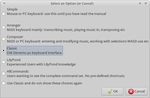

Denemo
Dieser Artikel wurde für die folgenden Ubuntu-Versionen getestet:
Ubuntu 14.04 Trusty Tahr
Zum Verständnis dieses Artikels sind folgende Seiten hilfreich:
Denemo  ist ein plattformübergreifendes, unter der GNU General Public License (GPL) herausgegebenes Notensatzprogramm. Noten können über die Computertastatur, über eine MIDI-Schnittstelle oder akustisch über ein mit dem Computer verbundenes Mikrofon eingegeben und anschließend umfangreich bearbeitet werden. Ein Vorspielen der erstellten Partitur ist ebenfalls möglich. Denemo verwendet zur Notenerstellung das Programm LilyPond, welches für ein besonders schönes Notenbild bekannt ist.
ist ein plattformübergreifendes, unter der GNU General Public License (GPL) herausgegebenes Notensatzprogramm. Noten können über die Computertastatur, über eine MIDI-Schnittstelle oder akustisch über ein mit dem Computer verbundenes Mikrofon eingegeben und anschließend umfangreich bearbeitet werden. Ein Vorspielen der erstellten Partitur ist ebenfalls möglich. Denemo verwendet zur Notenerstellung das Programm LilyPond, welches für ein besonders schönes Notenbild bekannt ist.
Übersicht über die Hauptfunktionen:
Partiturassistent zum automatischen Erstellen neuer Partiturvorlagen
Noteneingabe über MIDI-Instrumente, Tastatur oder Maus
Viele Funktionen wie Transponieren, Verändern von Notenwerten, Alternieren usw.
Vorspiel von Partituren durch das Programm
Historische und besondere Notationen
Übungen für Gehörbildung, Notenlesen u.a.
Umfangreiche, individuell anpassbare Tastenkürzel für verschiedene Anwendungszwecke
NotationMagick: intelligente automatische "Kompositions"-Möglichkeit durch das Programm (Zufallsgenerator, Tonfolgen aus Zahlenwerten, Mustern, Text), Durcheinanderwürfeln ausgewählter Passagen und vieles mehr
Übersicht über die unterstützten Formate:
Das Programm zeigt sich derzeit noch in einer gemischten, unvollständigen Übersetzung, in der viele Bedienelemente in englisch gehalten sind. Eine Lösung ist erst in Sicht, wenn eine vollständige entsprechende Sprachdatei vom Entwickler bereitgestellt wird.
Installation¶
| GNU Denemo |
Das Programm kann über folgendes Paket aus den offiziellen Paketquellen installiert[1] werden:
denemo (universe)
 mit apturl
mit apturl
Paketliste zum Kopieren:
sudo apt-get install denemo
sudo aptitude install denemo
Nach der Installation ist das Programm je nach Desktop-Umgebung unter dem Menüpunkt "Multimedia" bzw. "Unterhaltungsmedien" als "GNU Denemo" erreichbar[2].
Ansicht¶
|  |
| Startabfrage |
Beim ersten Programmstart öffnet sich zunächst als Startabfrage eine Einstellungsauswahl, welche über Angabe eines Verwendungsprofils die Festlegung der grundsätzlichen Programmparameter wie z.B. angezeigte Menüinhalte, Tastenkürzel usw. erlaubt.
Das Programmfenster selbst zeigt dann im Anschluss im oberen Teil einen Werkzeugbereich, welcher unter den üblichen Programm-Menüs und grundlegenden Programmfunktions-Symbolen folgende Symbolleisten anzeigt:
eine Leiste zur Wiedergabesteuerung für die Audiowiedergabe
eine Kontrolleiste zur MIDI-Steuerung
eine Notenleiste zur Noteneingabe
zwei "Snippet"-Schaltflächen (engl. "Schnipsel") zum Ausschneiden/Einfügen markierter Notenbereiche
 eine Bearbeitungsleiste mit mehreren sehr umfangreich bestückten Bearbeitungsmenüs
eine Bearbeitungsleiste mit mehreren sehr umfangreich bestückten Bearbeitungsmenüs
Hinweis:
Falls die eine oder andere Leiste in der Standardkonfiguration beim ersten Programmstart nicht aktiviert sein sollte (z.B. die Wiedergabeleiste oder die MIDI-Eingabeleiste), können diese über das Menü "View" nachträglich angeschaltet werden ("Playback Control" bzw. "Midi In Control").
Im unteren Teil wird die Partitur selbst angezeigt. Zu beachten ist, dass die Partitur keine Zeilenumbrüche anzeigt. Diese werden vom Programm aber automatisch beim Export in andere Formate wie z.B. PDF generiert.
Bedienung¶
Partiturassistent¶
Über "File -> Score Wizard" lässt sich ein Partiturassistent aufrufen, mit dessen Hilfe sich einfach neue Rohpartituren inklusive aller notwendigen Formatierungen, Instrumentierungen etc. erstellen lassen.
Noteneingabe¶
Notenleiste¶
Die intuitivste Noteneingabe (für Anfänger geeignet) kann über die Notenleiste erfolgen: zuerst wird in der Notenzeile an der Stelle, an der der blaue Cursor angezeigt wird, mithilfe der  -Maustaste die gewünschte Tonhöhe angeklickt; das kleine blaue Rechteck rutscht an die gewünschte Stelle. Anschließend wird in der Notenleiste der gewünschte Notenwert angeklickt, womit die Note erzeugt wird.
-Maustaste die gewünschte Tonhöhe angeklickt; das kleine blaue Rechteck rutscht an die gewünschte Stelle. Anschließend wird in der Notenleiste der gewünschte Notenwert angeklickt, womit die Note erzeugt wird.
Tastenkürzel¶
Die Noteneingabe kann auch per Tastatur erfolgen, falls in der Optionsauswahl zu Programmstart eine entsprechende Festlegung (z.B. "Classic") getroffen wurde. Diese Art der Noteneingabe ist insbesondere für fortgeschrittene Benutzer praktischer.
Hinweis:
Die Auswahl "All Commands" arbeitet ohne vordefinierte Tastenkürzel. In diesem Fall (oder auch bei Änderungswunsch in ein anderes Verwendungsprofil) müssen die Tastenkürzel über den "Befehlsmanager" (Menü "Bearbeiten -> Customize Commands, Shortcuts -> Manage Command Set") nachgeladen werden. Hierzu ist die Schaltfläche "Lade Standard-Befehlsliste" anzuklicken. Anschließend kann unter den angebotenen Standardzusammenstellungen (z.B. Classic.shortcuts oder Composer.shortcuts) im Verzeichnis /usr/share/denemo/actions/ die gewünschte Kombination gewählt werden und steht anschließend sofort zur Verfügung.
Tastenkürzel können auch manuell nach den eigenen Bedürfnissen konfiguriert werden. Im Befehlsmanager ist der entsprechende Eintrag zu suchen, dann die Schaltfläche "Add One Key Shortcut" oder "Add Two Key Shortcut" anzuklicken und zuletzt die gewünschte Tastenkombination einzugeben. Die Tastenkürzel können anschließend sofort verwendet werden. Um die Tastenkürzel auch beim nächsten Programmstart dauerhaft zur Verfügung zu haben, muss man sie als Standard abspeichern. Dies erfolgt über den Menüpunkt "Bearbeiten -> Customize Commands, Shortcuts -> Save Command Set". Das Programm schreibt dadurch die entsprechenden Konfigurationen in die Datei ~/.denemo-x.x.x/actions/Default.shortcuts.
Im Folgenden ist eine Auswahl der wichtigsten Tastenkürzel der Variante Classic.shortcuts aufgeführt:
| Auswahl der wichtigsten Tastenkürzel aus Classic.shortcuts | |
| Funktion | Tastenkürzel |
| Cursorposition nach links/rechts bewegen. | ← bzw. → |
| Cursorposition einen Takt nach links/rechts bewegen. | Strg + ← bzw. Strg + → |
| Von Cursorposition ausgehend nach links/rechts markieren. | ⇧ + ← bzw. ⇧ + → |
| Noteneinfügecursor (blaues bzw. rotes Viereck) nach oben/unten bewegen. | ↑ bzw. ↓ |
| Noteneinfügecursor (blaues bzw. rotes Viereck) auf gewünschte Tonhöhe positionieren. | Tonbuchstabe eingeben. |
| Note (mit bestimmter Tondauer) eingeben. | Zahlentasten (von 0 bis 6 ) für die Notenwerte von 1/1 bis 1/64 eingeben. |
| Pause (mit bestimmter Dauer) eingeben. | ⇧ + Zahlentaste (von 0 bis 6 ) für die Pausenwerte von 1/1 bis 1/64 eingeben. |
| Bereits vorhandene Note/Pause im Wert verändern. | Note/Pause anklicken (Cursor wird vor der Note positioniert), dann Alt und Zahlentaste (von 0 bis 6 ) für die Notenwerte von 1/1 bis 1/64 eingeben. |
| Punktierung erzeugen. | Note/Pause durch Anklicken markieren und . eingeben oder direkt nach Noteneingabe . eingeben. |
| Punktierung entfernen. | Strg + . |
| Bindebögen. | Druck auf die Taste 7 beginnt einen Bindebogen ab Cursorposition, 8 verlängert ihn, 9 verkürzt ihn wieder. |
Notenbearbeitung¶
Die Notenbearbeitung findet prinzipiell über die reich gefüllten und zahlreichen Menüs in der Bearbeitungsleiste statt, sofern keine Tastenkürzel vergeben sind.
| Übersicht über die Bearbeitungsmenüs | ||
| Bezeichnung | Bedeutung | Inhalt (Auswahl) |
| "Score" | Partiturfunktionen | - Partitureigenschaften - Partiturtitel - Seitenlayout - Kommentarfunktion - ... |
| "Movements" | Sätze | - Titel - Layout - Tempo - Ossia - Intro - Notenkopfstil (auch historisch) - ... |
| "Staffs/Voices" | Notenzeilen/Stimmen | - Zeileneigenschaften - Notenzeilen hinzufügen/entfernen - Stimmenbezeichnungen - Taktzahlen - ... |
| "Clefs" | Schlüssel | - Anfangsschlüssel - Schlüsselwechsel |
| "Keys" | Vorzeichen | - Anfangsvorzeichen - Vorzeichenwechsel |
| "Time Signatures" | Taktarten | - Anfangstaktart - Taktwechsel |
| "Measures" | Takte | - Taktnavigation - Takte hinzufügen und entfernen - Auftakte - optische Anpassung von Takten - Takte aufspalten - ... |
| "Chords" | Akkorde | - Töne zu Akkorden hinzufügen und entfernen - Intervalle hinzufügen - Akkorde als versteckt markieren - ... |
| "Notes/Rests" | Noten/Pausen | - Noten/Pausen hinzufügen/anhängen und entfernen - Notendauer - Bögen und Überbindungen - Dynamik, Verzierungen, Artikulation usw. - Überbalkungen - Transponieren - Fingersätze - Triolen - Symbole - ... |
| "Directives" | Spielanweisungen | - Metronomanweisungen - Doppelstriche und Wiederholungszeichen - Transpositionsanweisungen - MIDI-Anweisungen - Dynamikanweisungen - Voltenklammern - Atemzeichen - ... |
| "Lyrics" | Liedtext | - Liedtexte hinzufügen und entfernen |
| "NotationMagick" | "Kompositionsautomatik" | - Zwölftonreihe generieren - Zufallsgenerator - ... |
Tipps und Tricks¶
Nach Mausklick auf den Notenschlüssel in der Partitur erscheint ein Menü, welches einen Schnellzugriff zur Änderung desselben ermöglicht.
Nach Mausklick auf die Taktanweisung in der Partitur erscheint ein Menü, welches einen Schnellzugriff zur Änderung der Taktart ermöglicht.
Über "View" lässt sich (falls nicht schon voreingestellt) eine Artikulationspalette anzeigen. Mit deren Hilfe können markierte Noten einfach mit Artikulationszeichen, Verzierungen usw. versehen werden.
Über "Bearbeiten -> Change Preferences" kann auf das allgemeine Einstellungsfenster der Programms zugegriffen werden. Es lassen sich Ansichtsoptionen, Audio-/MIDI-Einstellungen, die Verwendung externer Programme und vieles mehr konfigurieren.
| Schnellzugriff Notenschlüssel |
| Schnellzugriff Taktart |
| Artikulationspalette |
| Programmeinstellungen |
Educational¶
Über den Menüpunkt "Educational" stehen Funktionen zur musikalischen Grundausbildung wie z.B. Gehörbildungsübungen, Übungen zum Notenlesen usw. zur Verfügung.
Beispielsweise stellt der Unterpunkt "Aural Training" (engl. "Gehörbildung") Übungen zur Identifizierung von Tonleiternoten sowie zum Vergleich von Akkorden bereit. Im Unterpunkt "Note-Reading" können Übungen zur Erkennung von Notennamen, zur Intervallerkennung, Erkennung der Intervallrichtung (siehe Bildbeispiel) und mehr durchgeführt werden. Unter den während der Übung angezeigten Schaltflächen ist immer auch eine Hilfefunktion ("Help") vorhanden, wodurch Informationen zum Ablauf der jeweiligen Übung eingeblendet werden können. Die anzuklickenden Lösungsschaltflächen sind jeweils durch blaue Schrift markiert.
Handbuch¶
Unter dem Menüpunkt "Help -> Browse Manual" ist ein recht umfangreiches Benutzerhandbuch zugänglich.
Problembehebung¶
Absturz beim Laden von Composer.shortcuts¶
Das Programm stürzt reproduzierbar bei manuellem Laden von Composer.shortcuts ab. Als provisorische Lösung empfiehlt es sich, falls auf diese Datei zurückgegriffen werden soll, die entsprechende Auswahl bereits beim Programmstart zu treffen.
Links¶
Project-News / Versionshistorie als Atom-Feed, zum Ansehen oder Abonnieren
Noten und Akkorde
 Programmübersicht
Programmübersicht
- Erstellt mit Inyoka
-
 2004 – 2017 ubuntuusers.de • Einige Rechte vorbehalten
2004 – 2017 ubuntuusers.de • Einige Rechte vorbehalten
Lizenz • Kontakt • Datenschutz • Impressum • Serverstatus -
Serverhousing gespendet von